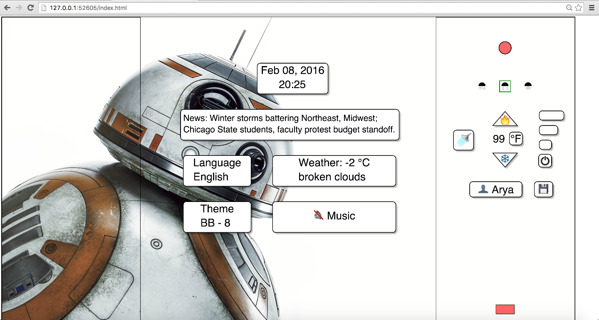
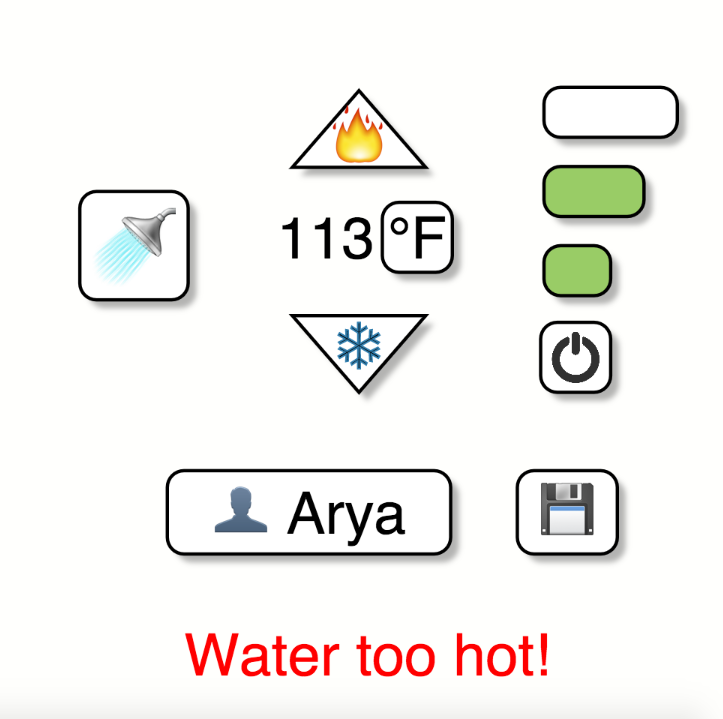

Shower the People
Shower the People is an application that focuses on providing the users with a great shower experience by using futuristic user interface.
How to use the App?

The controls of the application are straightforward and easy to use. Each of the controls/displays is described below:
Front Wall:
Power and flow control:
- The power button can be used to switch on or off the water flow; Initially, the water flow is set to low and the user can use the flow control buttons to either increase or decrease the water flow.
- The feedback is provided to the user by the change in colors of the flow control buttons.
Temperature Control:

- The up and down arrows can be used to increase and decrease the water temperature respectively.
- The water temperature is displayed in the middle and the user has the option to change the units of the temperature to either C or F.
- A warning sign pops up when the water temperature is too high.
Shower/Bath Control:
- The shower/bath control can be used to toggle the water between the shower and bathspout. The feedback is provided by the color of the shower and bathspout.
- The position of the control toggles between the reach of shower and bathtub whenever it is pressed. For example, if the user chooses the bathtub option, the control moves down. It moves back up when the user chooses the shower again.
- If the bathtub is full, the system plays a voice message indicating the same and unblocks the drain.
Spray type Controls:
- The user can control the spray type of the shower by clicking on any of the three available spray types - convergent, normal or divergent.
- The feedback is provided in the form of green selection around the corresponding spray type.
Saved Preferences:
- The application supports presets for multiple users (upto 5) and the user has the ability to retrieve, modify or save the preferences.
- By toggling the users button, different preferences are actuated.
- The user has the option of updating the presets to desired values by clicking on the save button present next to the user button.
- The values that are stored in the preset are water temperature, water flow rate, shower spray type and theme.
Side Wall:
Date and Time Display:
The current date and time are displayed with the time in 24 hour format.
News Display:
National and local news is displayed.
Language Selection:
- The user can choose from a selection of 10 different languages using the language control button.
- English and Espanol are implemented in the application. When the language is changed, all text including the news is displayed in the corresponding language.
Weather Display:
The current weather in C and a description of local weather conditions is displayed.
Theme Selection:
- The user can choose from a selection of 5 different background imagery by clicking on the theme control button.
- The user can also choose to leave the background empty.
Play Music:

The user has the option to play the available music by toggling the music button.
Video
Rationale for why the App has good user interface:
- All the design decisions are made while taking the comfort, ease and satisfaction of the user into consideration.
- Attention is given to the fact that all the controls should be within the reach of the user and their position is set accordingly.
- The basic features or controls that are most used are placed on the front wall and the additional options are placed on the side wall; this aligns with the frequency/comfort of using the walls.
- The back wall is not used as the user will naturally be facing away from it.
- Care is taken such that all functionalities are clear and easy to use and understand; their design and symbols are decided such that they are legible, plain and not confusing.
- The App provides feedback to every action the user performs, rather than adding to the ambiguity of usage.
- Features and controls like weather, music, news and presets assist the user in taking a comfortable and enjoyable bath all the while providing the user with much needed information and entertainment.
Sketches
Present Sketch:
Older Sketches: